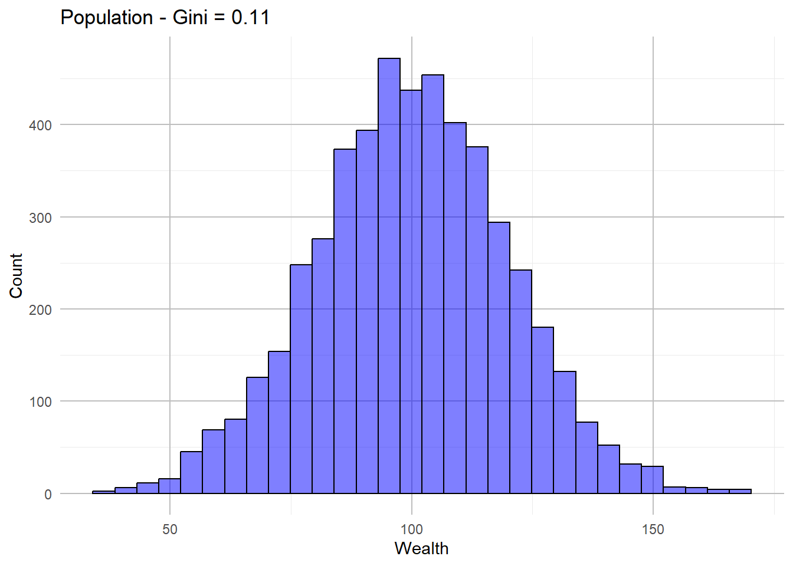
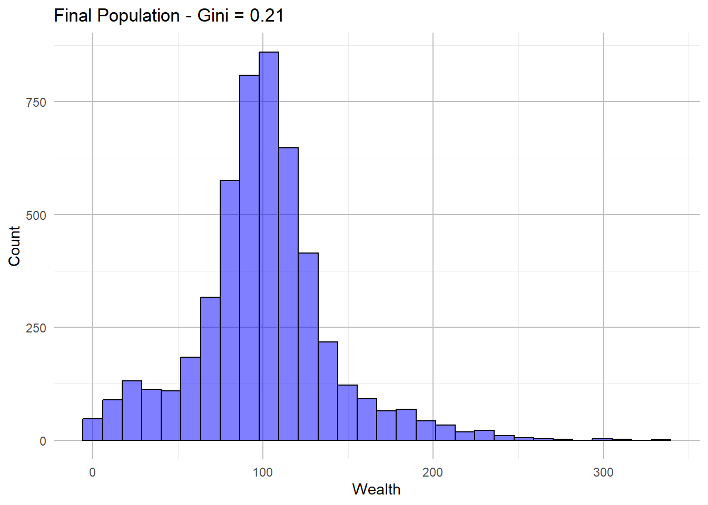
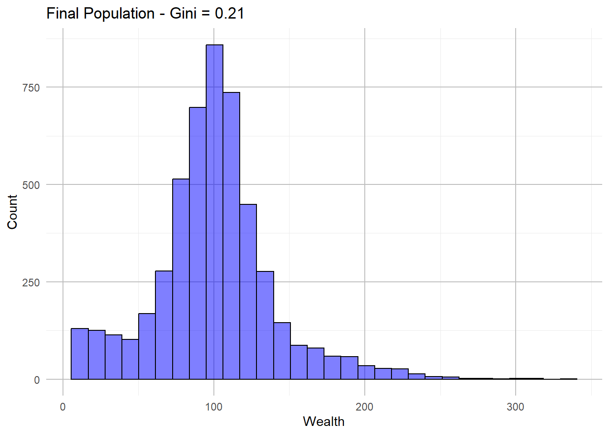
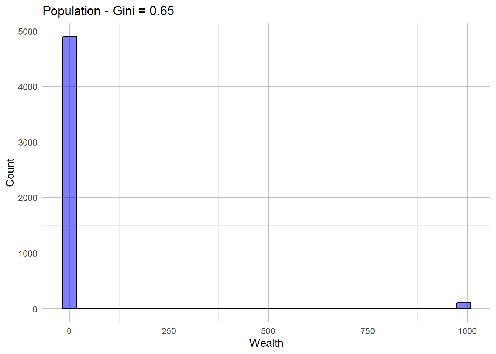
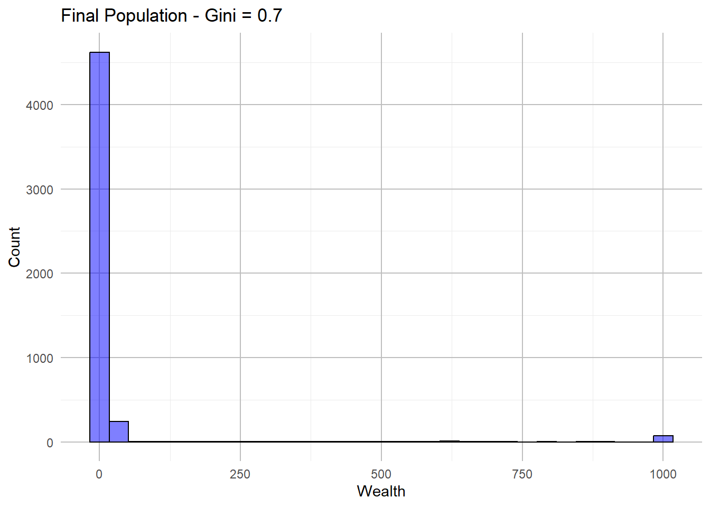

okay so first comes the recreation of https://github.com/norvig/pytudes/blob/main/ipynb/Economics.ipynb#js-repo-pjax-container
for this I used AI (chatGPT) to clarify parts of the python code I didn’t understand - and asked it to explain to me how I could generate a population in R,
for how generating a gini coefficient in R works - I looked at this tutorial (https://scales.arabpsychology.com/stats/how-to-calculate-gini-coefficient-in-r-with-example/) - using the inequality package in R. Unfortunatly the package is not supportted with the newest R version, so I asked chatGPT for alternatives. The suggestion was to create a custom gini() function
I encountered some problems as the wealth included zeros/NA, i searched for help and found resources at R Stackoverflow and had to exclude 0’s. For the simulation step I also asked chatGPT for help and had to adapt the code it generated / same for the simulation visualization (not the histograms) - I hope this gives enough credits, I would have been lost without it
Code
set.seed(123)#ParametersN<-5000#Default size of the populationMU<-100#Default mean of the populationsigma<-MU/5#Standard deviation is 1/5 of the mean#Generate the populationpopulation<-rnorm(N, mean =MU, sd =sigma)population[population<=0]<-1#Create gini functiongini<-function(y){y<-sort(y)#Sort pop by wealth in asending order n<-length(y)#Number of peoplenumer<-2*sum((1:n)*y)#Numerator sum of sorted values weighted by list posdenom<-n*sum(y)#Denominator total wealth of popreturn((numer/denom)-(n+1)/n)#Compute gini coeffi}# Print initial Gini coefficientcat("Initial Gini coefficient:", gini(population), "\n")
Initial Gini coefficient: 0.1121553
Code
#Create hist of poplibrary(ggplot2)hist_pop<-function(population, label='Population'){gini_value<-round(gini(population), 2)label<-paste(label, "- Gini =", gini_value)p<-ggplot(data.frame(population), aes(x =population))+geom_histogram(bins =30, fill ="blue", color ="black", alpha =0.5)+labs(title =label, x ="Wealth", y ="Count")+theme_minimal()+theme(panel.grid.major =element_line(colour ="grey"))print(p)}hist_pop(population)

Code
# Transaction: Randomly split the pot between two actorsrandom_split<-function(A, B){pot<-A+Bif(A<=0&&B<=0)return(c(0, 0))share<-runif(1, 0, pot)return(c(share, pot-share))}# Randomly select two actorsanyone<-function(N)sample(1:N, 2)# Simulation step: Perform one transaction between two random actorsstep_function<-function(population){indices<-anyone(length(population))population[indices]<-random_split(population[indices[1]], population[indices[2]])return(population)}# Simulate over T stepssimulate<-function(population, T){for(tin1:T){population<-step_function(population)}return(population)}# Run the simulation and visualize the resultsT<-1000# Number of stepsfinal_population<-simulate(population, T)# Plot final population distributionhist_pop(final_population, "Final Population")

Code
# Display final Gini coefficientcat("Final Gini coefficient:", gini(final_population), "\n")
The following objects are masked from 'package:stats':
filter, lag
The following objects are masked from 'package:base':
intersect, setdiff, setequal, union
Code
# Percentile Calculation & Results at interbvalspercent<-function(pct, items){return(quantile(items, probs =pct/100))}simulate_collect<-function(population, T){results<-list()for(tin1:T){population<-step_function(population)if(t%%(T/10)==0){results[[length(results)+1]]<-list(t =t, pop =sort(population))}}return(results)}#Simulation Visualization Functionshow_simulation<-function(population, k=40, percentiles=c(1, 10, 50, 90, 99)){N<-length(population)T<-k*Nstart_population<-populationresults<-simulate_collect(population, T)cat(sprintf("%7s %6s %6s", "t", "Gini", "stdev"))for(pctinpercentiles){cat(sprintf(" %4d%%", pct))}cat("\n")cat("------- ------ ------")for(iinpercentiles)cat(" ----")cat("\n")for(resultinresults){pop<-result$popgini_value<-gini(pop)stdev_value<-sd(pop)percentile_values<-sapply(percentiles, function(pct)percent(pct, pop))fmt<-sprintf("%7d %.2f %6.1f", result$t, gini_value, stdev_value)cat(fmt)cat(sprintf("%4.0f", percentile_values), "\n")}#Percentile plots over timetimes<-sapply(results, function(res)res$t)plot_data<-data.frame( time =rep(times, each =length(percentiles)), percentile =rep(percentiles, times =length(times)), value =unlist(lapply(results, function(res)sapply(percentiles, function(pct)percent(pct, res$pop)))))p<-ggplot(plot_data, aes(x =value, y =time, color =as.factor(percentile)))+geom_line()+labs(title ="Percentile Plots Over Time", x ="Wealth", y ="Time", color ="Percentile")+theme_minimal()+theme(panel.grid.major =element_line(color ="grey"))+scale_y_reverse()# To match the "time goes bottom to top" behaviorprint(p)# Histogramsstart_hist<-ggplot(data.frame(start_population), aes(x =start_population))+geom_histogram(bins =30, fill ="blue", color ="black", alpha =0.5)+labs(title ="Start Population Histogram", x ="Wealth", y ="Count")+theme_minimal()+theme(panel.grid.major =element_line(colour ="grey"))final_population<-results[[length(results)]]$popfinal_hist<-ggplot(data.frame(final_population), aes(x =final_population))+geom_histogram(bins =30, fill ="green", color ="black", alpha =0.5)+labs(title ="Final Population Histogram", x ="Wealth", y ="Count")+theme_minimal()+theme(panel.grid.major =element_line(colour ="grey"))print(start_hist)print(final_hist)# Ordered Curvesordered_curves<-data.frame( order =1:N, start =sort(start_population), end =final_population)ggplot(ordered_curves)+geom_line(aes(x =start, y =order, color ="Start"))+geom_line(aes(x =end, y =order, color ="End"))+labs(title ="Ordered Curves", x ="Wealth", y ="Order", color ="Population")+theme_minimal()+theme(panel.grid.major =element_line(colour ="grey"))}#Runshow_simulation(population)
okay so this was the recreation of https://github.com/norvig/pytudes/blob/main/ipynb/Economics.ipynb#js-repo-pjax-container
now i will play around with it - trying to gain insights
Idea 1:Introduce Minimum Wealth Threshold
In current model, wealth can go very low (even close to zero, although I did not allow zeros since this caused issues). What happens if I set a min wealth threshold, so the poorest people can’t lose their wealth beyond a certain point? This could simulate a sort of “welfare” system that prevents people from becoming too poor - as a first try i set 10 as the minimum wealth
Change to code: Add condition that prevents wealth from dropping below a certain level.
Code
set.seed(123)#ParametersN<-5000#Default size of the populationMU<-100#Default mean of the populationsigma<-MU/5#Standard deviation is 1/5 of the mean#Generate the populationpopulation<-rnorm(N, mean =MU, sd =sigma)population[population<=0]<-1#Create gini functiongini<-function(y){y<-sort(y)#Sort pop by wealth in asending order n<-length(y)#Number of peoplenumer<-2*sum((1:n)*y)#Numerator sum of sorted values weighted by list posdenom<-n*sum(y)#Denominator total wealth of popreturn((numer/denom)-(n+1)/n)#Compute gini coeffi}# Print initial Gini coefficientcat("Initial Gini coefficient:", gini(population), "\n")
Initial Gini coefficient: 0.1121553
Code
#Create hist of poplibrary(ggplot2)hist_pop<-function(population, label='Population'){gini_value<-round(gini(population), 2)label<-paste(label, "- Gini =", gini_value)p<-ggplot(data.frame(population), aes(x =population))+geom_histogram(bins =30, fill ="blue", color ="black", alpha =0.5)+labs(title =label, x ="Wealth", y ="Count")+theme_minimal()+theme(panel.grid.major =element_line(colour ="grey"))print(p)}hist_pop(population)
Code
#Transaction: split the pot but with minimumrandom_split<-function(A, B, min_wealth=10){pot<-A+Bif(A<=min_wealth&&B<=min_wealth)return(c(min_wealth, min_wealth))share<-runif(1, 0, pot)return(c(max(share, min_wealth), max(pot-share, min_wealth)))}# Randomly select two actorsanyone<-function(N)sample(1:N, 2)# Simulation step: Perform one transaction between two random actorsstep_function<-function(population){indices<-anyone(length(population))population[indices]<-random_split(population[indices[1]], population[indices[2]])return(population)}# Simulate over T stepssimulate<-function(population, T){for(tin1:T){population<-step_function(population)}return(population)}# Run the simulation and visualize the resultsT<-1000# Number of stepsfinal_population<-simulate(population, T)# Plot final population distributionhist_pop(final_population, "Final Population")

Code
# Display final Gini coefficientcat("Final Gini coefficient:", gini(final_population), "\n")
Final Gini coefficient: 0.2109969
Code
#Simulation Visualization# Librarieslibrary(dplyr)# Percentile Calculation & Results at interbvalspercent<-function(pct, items){return(quantile(items, probs =pct/100))}simulate_collect<-function(population, T){results<-list()for(tin1:T){population<-step_function(population)if(t%%(T/10)==0){results[[length(results)+1]]<-list(t =t, pop =sort(population))}}return(results)}#Simulation Visualization Functionshow_simulation<-function(population, k=40, percentiles=c(1, 10, 50, 90, 99)){N<-length(population)T<-k*Nstart_population<-populationresults<-simulate_collect(population, T)cat(sprintf("%7s %6s %6s", "t", "Gini", "stdev"))for(pctinpercentiles){cat(sprintf(" %4d%%", pct))}cat("\n")cat("------- ------ ------")for(iinpercentiles)cat(" ----")cat("\n")for(resultinresults){pop<-result$popgini_value<-gini(pop)stdev_value<-sd(pop)percentile_values<-sapply(percentiles, function(pct)percent(pct, pop))fmt<-sprintf("%7d %.2f %6.1f", result$t, gini_value, stdev_value)cat(fmt)cat(sprintf("%4.0f", percentile_values), "\n")}#Percentile plots over timetimes<-sapply(results, function(res)res$t)plot_data<-data.frame( time =rep(times, each =length(percentiles)), percentile =rep(percentiles, times =length(times)), value =unlist(lapply(results, function(res)sapply(percentiles, function(pct)percent(pct, res$pop)))))p<-ggplot(plot_data, aes(x =value, y =time, color =as.factor(percentile)))+geom_line()+labs(title ="Percentile Plots Over Time", x ="Wealth", y ="Time", color ="Percentile")+theme_minimal()+theme(panel.grid.major =element_line(color ="grey"))+scale_y_reverse()# To match the "time goes bottom to top" behaviorprint(p)# Histogramsstart_hist<-ggplot(data.frame(start_population), aes(x =start_population))+geom_histogram(bins =30, fill ="blue", color ="black", alpha =0.5)+labs(title ="Start Population Histogram", x ="Wealth", y ="Count")+theme_minimal()+theme(panel.grid.major =element_line(colour ="grey"))final_population<-results[[length(results)]]$popfinal_hist<-ggplot(data.frame(final_population), aes(x =final_population))+geom_histogram(bins =30, fill ="green", color ="black", alpha =0.5)+labs(title ="Final Population Histogram", x ="Wealth", y ="Count")+theme_minimal()+theme(panel.grid.major =element_line(colour ="grey"))print(start_hist)print(final_hist)# Ordered Curvesordered_curves<-data.frame( order =1:N, start =sort(start_population), end =final_population)ggplot(ordered_curves)+geom_line(aes(x =start, y =order, color ="Start"))+geom_line(aes(x =end, y =order, color ="End"))+labs(title ="Ordered Curves", x ="Wealth", y ="Order", color ="Population")+theme_minimal()+theme(panel.grid.major =element_line(colour ="grey"))}#Runshow_simulation(population)
okay, looking at the new results the minimum wealth idea worked - no individual is below 10 (as seen in the 1% quantile). I was expecting that the wealth distribution would also in turn become more evenly distributed. But if I am correct, the higher wealth quantiles now accumulate more wealth than they did before (without the minimum wealth: the 90th percentile starts at 226 units of wealth and ends at 228. The 99th percentile starts at 441 and ends at 447; with the wealth minimum: The 90th percentile starts at 232 and ends at 292. The 99th percentile starts at 446 and ends at 586.)
Introducing a minimum wealth threshold has some protective effect for the poorest individuals, preventing them from falling into extreme poverty. But I think now the richer individulals get even richer than without the minimum and even quicker as well - why I have no idea. The gini coefficient stays roughly the same.
Idea 2: Make the initial population more unequal and see what happens
Next, I will experiment and make the wealth distribution in the starting population more unequal, creating 100 individual that are wealthy and 4900 individuals that are poor (for how to code this I also asked chatGPT)
I am expecting to see similar results as before - very high inequality and even higher wealth accumulation for the wealthy people
Change to code: different wealth distribution, creating two groups (weatlhy: having 1000 vs poor: having 10)
Code
set.seed(123)N<-5000# Total population sizewealthy_count<-100# Number of wealthy individualspoor_count<-N-wealthy_count# Number of poor individuals# Generate the population with more inequalitywealthy_wealth<-1000# Wealth of the wealthy individualspoor_wealth<-10# Wealth of the poor individuals# Create the populationpopulation<-c(rep(wealthy_wealth, wealthy_count), rep(poor_wealth, poor_count))#Create gini functiongini<-function(y){y<-sort(y)#Sort pop by wealth in asending order n<-length(y)#Number of peoplenumer<-2*sum((1:n)*y)#Numerator sum of sorted values weighted by list posdenom<-n*sum(y)#Denominator total wealth of popreturn((numer/denom)-(n+1)/n)#Compute gini coeffi}# Print initial Gini coefficient using Gini() from DescToolscat("Initial Gini coefficient:", gini(population), "\n")
Initial Gini coefficient: 0.6511409
Code
#Create hist of poplibrary(ggplot2)hist_pop<-function(population, label='Population'){gini_value<-round(gini(population), 2)label<-paste(label, "- Gini =", gini_value)p<-ggplot(data.frame(population), aes(x =population))+geom_histogram(bins =30, fill ="blue", color ="black", alpha =0.5)+labs(title =label, x ="Wealth", y ="Count")+theme_minimal()+theme(panel.grid.major =element_line(colour ="grey"))print(p)}hist_pop(population)

Code
# Transaction: Randomly split the pot between two actorsrandom_split<-function(A, B){pot<-A+Bif(A<=0&&B<=0)return(c(0, 0))share<-runif(1, 0, pot)return(c(share, pot-share))}# Randomly select two actorsanyone<-function(N)sample(1:N, 2)# Simulation step: Perform one transaction between two random actorsstep_function<-function(population){indices<-anyone(length(population))population[indices]<-random_split(population[indices[1]], population[indices[2]])return(population)}# Simulate over T stepssimulate<-function(population, T){for(tin1:T){population<-step_function(population)}return(population)}# Run the simulation and visualize the resultsT<-1000# Number of stepsfinal_population<-simulate(population, T)# Plot final population distributionhist_pop(final_population, "Final Population")

Code
# Display final Gini coefficientcat("Final Gini coefficient:", gini(final_population), "\n")
Final Gini coefficient: 0.6993424
Code
#Simulation Visualization# Librarieslibrary(dplyr)# Percentile Calculation & Results at interbvalspercent<-function(pct, items){return(quantile(items, probs =pct/100))}simulate_collect<-function(population, T){results<-list()for(tin1:T){population<-step_function(population)if(t%%(T/10)==0){results[[length(results)+1]]<-list(t =t, pop =sort(population))}}return(results)}#Simulation Visualization Functionshow_simulation<-function(population, k=40, percentiles=c(1, 10, 50, 90, 99)){N<-length(population)T<-k*Nstart_population<-populationresults<-simulate_collect(population, T)cat(sprintf("%7s %6s %6s", "t", "Gini", "stdev"))for(pctinpercentiles){cat(sprintf(" %4d%%", pct))}cat("\n")cat("------- ------ ------")for(iinpercentiles)cat(" ----")cat("\n")for(resultinresults){pop<-result$popgini_value<-gini(pop)stdev_value<-sd(pop)percentile_values<-sapply(percentiles, function(pct)percent(pct, pop))fmt<-sprintf("%7d %.2f %6.1f", result$t, gini_value, stdev_value)cat(fmt)cat(sprintf("%4.0f", percentile_values), "\n")}#Percentile plots over timetimes<-sapply(results, function(res)res$t)plot_data<-data.frame( time =rep(times, each =length(percentiles)), percentile =rep(percentiles, times =length(times)), value =unlist(lapply(results, function(res)sapply(percentiles, function(pct)percent(pct, res$pop)))))p<-ggplot(plot_data, aes(x =value, y =time, color =as.factor(percentile)))+geom_line()+labs(title ="Percentile Plots Over Time", x ="Wealth", y ="Time", color ="Percentile")+theme_minimal()+theme(panel.grid.major =element_line(color ="grey"))+scale_y_reverse()# To match the "time goes bottom to top" behaviorprint(p)# Histogramsstart_hist<-ggplot(data.frame(start_population), aes(x =start_population))+geom_histogram(bins =30, fill ="blue", color ="black", alpha =0.5)+labs(title ="Start Population Histogram", x ="Wealth", y ="Count")+theme_minimal()+theme(panel.grid.major =element_line(colour ="grey"))final_population<-results[[length(results)]]$popfinal_hist<-ggplot(data.frame(final_population), aes(x =final_population))+geom_histogram(bins =30, fill ="green", color ="black", alpha =0.5)+labs(title ="Final Population Histogram", x ="Wealth", y ="Count")+theme_minimal()+theme(panel.grid.major =element_line(colour ="grey"))print(start_hist)print(final_hist)# Ordered Curvesordered_curves<-data.frame( order =1:N, start =sort(start_population), end =final_population)ggplot(ordered_curves)+geom_line(aes(x =start, y =order, color ="Start"))+geom_line(aes(x =end, y =order, color ="End"))+labs(title ="Ordered Curves", x ="Wealth", y ="Order", color ="Population")+theme_minimal()+theme(panel.grid.major =element_line(colour ="grey"))}#Runshow_simulation(population)
Looking at the difference between this simulation and the first, here the initial Gini coefficient is much higher compared. I think this suggests, that the wealth distribution at the beginning is much more unequal - which is exactly what I wanted. After 20000 simulations it drops and stabilizes at around 0.51, suggesting that the system equalizes the wealth over time (a little bit at least - unequality is still high).
The 99th percentile drops significantly (from 229 to 134), indicating that the wealthiest individuals are losing wealth over time. However, they remain far richer than the rest of the population, which suggests that the random wealth transfers aren’t sufficient to equalize wealth entirely. I guess with the super high amount of inequality I created this is not very surprising.
---title: "Assignment 2"---okay so first comes the recreation of https://github.com/norvig/pytudes/blob/main/ipynb/Economics.ipynb#js-repo-pjax-container- for this I used AI (chatGPT) to clarify parts of the python code I didn't understand - and asked it to explain to me how I could generate a population in R,- for how generating a gini coefficient in R works - I looked at this tutorial (https://scales.arabpsychology.com/stats/how-to-calculate-gini-coefficient-in-r-with-example/) - using the inequality package in R. Unfortunatly the package is not supportted with the newest R version, so I asked chatGPT for alternatives. The suggestion was to create a custom gini() function- I encountered some problems as the wealth included zeros/NA, i searched for help and found resources at [R Stackoverflow](https://stackoverflow.com/questions/tagged/r) and had to exclude 0's. For the simulation step I also asked chatGPT for help and had to adapt the code it generated / same for the simulation visualization (not the histograms) - I hope this gives enough credits, I would have been lost without it```{r}set.seed(123)#ParametersN <-5000#Default size of the populationMU <-100#Default mean of the populationsigma <- MU /5#Standard deviation is 1/5 of the mean#Generate the populationpopulation <-rnorm(N, mean = MU, sd = sigma)population[population <=0] <-1#Create gini functiongini <-function(y) { y <-sort(y) #Sort pop by wealth in asending order n <-length(y) #Number of people numer <-2*sum((1:n) * y) #Numerator sum of sorted values weighted by list pos denom <- n *sum(y) #Denominator total wealth of popreturn((numer / denom) - (n +1) / n) #Compute gini coeffi}# Print initial Gini coefficientcat("Initial Gini coefficient:", gini(population), "\n")#Create hist of poplibrary(ggplot2)hist_pop <-function(population, label='Population') { gini_value <-round(gini(population), 2) label <-paste(label, "- Gini =", gini_value) p <-ggplot(data.frame(population), aes(x = population)) +geom_histogram(bins =30, fill ="blue", color ="black", alpha =0.5) +labs(title = label, x ="Wealth", y ="Count") +theme_minimal() +theme(panel.grid.major =element_line(colour ="grey"))print(p) }hist_pop(population)# Transaction: Randomly split the pot between two actorsrandom_split <-function(A, B) { pot <- A + Bif (A <=0&& B <=0) return(c(0, 0)) share <-runif(1, 0, pot)return(c(share, pot - share))}# Randomly select two actorsanyone <-function(N) sample(1:N, 2)# Simulation step: Perform one transaction between two random actorsstep_function <-function(population) { indices <-anyone(length(population)) population[indices] <-random_split(population[indices[1]], population[indices[2]])return(population)}# Simulate over T stepssimulate <-function(population, T) {for (t in1:T) { population <-step_function(population) }return(population)}# Run the simulation and visualize the resultsT <-1000# Number of stepsfinal_population <-simulate(population, T)# Plot final population distributionhist_pop(final_population, "Final Population")# Display final Gini coefficientcat("Final Gini coefficient:", gini(final_population), "\n")#Simulation Visualization# Librarieslibrary(dplyr)# Percentile Calculation & Results at interbvalspercent <-function(pct, items) {return(quantile(items, probs = pct /100))}simulate_collect <-function(population, T) { results <-list()for (t in1:T) { population <-step_function(population)if (t %% (T /10) ==0) { results[[length(results) +1]] <-list(t = t, pop =sort(population)) } }return(results)}#Simulation Visualization Functionshow_simulation <-function(population, k=40, percentiles=c(1, 10, 50, 90, 99)) { N <-length(population) T <- k * N start_population <- population results <-simulate_collect(population, T)cat(sprintf("%7s %6s %6s", "t", "Gini", "stdev"))for (pct in percentiles) {cat(sprintf(" %4d%%", pct)) }cat("\n")cat("------- ------ ------")for (i in percentiles) cat(" ----")cat("\n")for (result in results) { pop <- result$pop gini_value <-gini(pop) stdev_value <-sd(pop) percentile_values <-sapply(percentiles, function(pct) percent(pct, pop)) fmt <-sprintf("%7d %.2f %6.1f", result$t, gini_value, stdev_value)cat(fmt)cat(sprintf("%4.0f", percentile_values), "\n") }#Percentile plots over time times <-sapply(results, function(res) res$t) plot_data <-data.frame(time =rep(times, each =length(percentiles)),percentile =rep(percentiles, times =length(times)),value =unlist(lapply(results, function(res) sapply(percentiles, function(pct) percent(pct, res$pop)))) ) p <-ggplot(plot_data, aes(x = value, y = time, color =as.factor(percentile))) +geom_line() +labs(title ="Percentile Plots Over Time", x ="Wealth", y ="Time", color ="Percentile") +theme_minimal() +theme(panel.grid.major =element_line(color ="grey")) +scale_y_reverse() # To match the "time goes bottom to top" behaviorprint(p)# Histograms start_hist <-ggplot(data.frame(start_population), aes(x = start_population)) +geom_histogram(bins =30, fill ="blue", color ="black", alpha =0.5) +labs(title ="Start Population Histogram", x ="Wealth", y ="Count") +theme_minimal() +theme(panel.grid.major =element_line(colour ="grey")) final_population <- results[[length(results)]]$pop final_hist <-ggplot(data.frame(final_population), aes(x = final_population)) +geom_histogram(bins =30, fill ="green", color ="black", alpha =0.5) +labs(title ="Final Population Histogram", x ="Wealth", y ="Count") +theme_minimal() +theme(panel.grid.major =element_line(colour ="grey"))print(start_hist)print(final_hist)# Ordered Curves ordered_curves <-data.frame(order =1:N,start =sort(start_population),end = final_population )ggplot(ordered_curves) +geom_line(aes(x = start, y = order, color ="Start")) +geom_line(aes(x = end, y = order, color ="End")) +labs(title ="Ordered Curves", x ="Wealth", y ="Order", color ="Population") +theme_minimal() +theme(panel.grid.major =element_line(colour ="grey"))}#Runshow_simulation(population)```okay so this was the recreation of https://github.com/norvig/pytudes/blob/main/ipynb/Economics.ipynb#js-repo-pjax-containernow i will play around with it - trying to gain insights**Idea 1:** **Introduce Minimum Wealth Threshold**In current model, wealth can go very low (even close to zero, although I did not allow zeros since this caused issues). What happens if I set a min wealth threshold, so the poorest people can't lose their wealth beyond a certain point? This could simulate a sort of "welfare" system that prevents people from becoming too poor - as a first try i set 10 as the minimum wealth**Change to code**: Add condition that prevents wealth from dropping below a certain level.```{r}set.seed(123)#ParametersN <-5000#Default size of the populationMU <-100#Default mean of the populationsigma <- MU /5#Standard deviation is 1/5 of the mean#Generate the populationpopulation <-rnorm(N, mean = MU, sd = sigma)population[population <=0] <-1#Create gini functiongini <-function(y) { y <-sort(y) #Sort pop by wealth in asending order n <-length(y) #Number of people numer <-2*sum((1:n) * y) #Numerator sum of sorted values weighted by list pos denom <- n *sum(y) #Denominator total wealth of popreturn((numer / denom) - (n +1) / n) #Compute gini coeffi}# Print initial Gini coefficientcat("Initial Gini coefficient:", gini(population), "\n")#Create hist of poplibrary(ggplot2)hist_pop <-function(population, label='Population') { gini_value <-round(gini(population), 2) label <-paste(label, "- Gini =", gini_value) p <-ggplot(data.frame(population), aes(x = population)) +geom_histogram(bins =30, fill ="blue", color ="black", alpha =0.5) +labs(title = label, x ="Wealth", y ="Count") +theme_minimal() +theme(panel.grid.major =element_line(colour ="grey"))print(p) }hist_pop(population)#Transaction: split the pot but with minimumrandom_split <-function(A, B, min_wealth =10) { pot <- A + Bif (A <= min_wealth && B <= min_wealth) return(c(min_wealth, min_wealth)) share <-runif(1, 0, pot)return(c(max(share, min_wealth), max(pot - share, min_wealth)))}# Randomly select two actorsanyone <-function(N) sample(1:N, 2)# Simulation step: Perform one transaction between two random actorsstep_function <-function(population) { indices <-anyone(length(population)) population[indices] <-random_split(population[indices[1]], population[indices[2]])return(population)}# Simulate over T stepssimulate <-function(population, T) {for (t in1:T) { population <-step_function(population) }return(population)}# Run the simulation and visualize the resultsT <-1000# Number of stepsfinal_population <-simulate(population, T)# Plot final population distributionhist_pop(final_population, "Final Population")# Display final Gini coefficientcat("Final Gini coefficient:", gini(final_population), "\n")#Simulation Visualization# Librarieslibrary(dplyr)# Percentile Calculation & Results at interbvalspercent <-function(pct, items) {return(quantile(items, probs = pct /100))}simulate_collect <-function(population, T) { results <-list()for (t in1:T) { population <-step_function(population)if (t %% (T /10) ==0) { results[[length(results) +1]] <-list(t = t, pop =sort(population)) } }return(results)}#Simulation Visualization Functionshow_simulation <-function(population, k=40, percentiles=c(1, 10, 50, 90, 99)) { N <-length(population) T <- k * N start_population <- population results <-simulate_collect(population, T)cat(sprintf("%7s %6s %6s", "t", "Gini", "stdev"))for (pct in percentiles) {cat(sprintf(" %4d%%", pct)) }cat("\n")cat("------- ------ ------")for (i in percentiles) cat(" ----")cat("\n")for (result in results) { pop <- result$pop gini_value <-gini(pop) stdev_value <-sd(pop) percentile_values <-sapply(percentiles, function(pct) percent(pct, pop)) fmt <-sprintf("%7d %.2f %6.1f", result$t, gini_value, stdev_value)cat(fmt)cat(sprintf("%4.0f", percentile_values), "\n") }#Percentile plots over time times <-sapply(results, function(res) res$t) plot_data <-data.frame(time =rep(times, each =length(percentiles)),percentile =rep(percentiles, times =length(times)),value =unlist(lapply(results, function(res) sapply(percentiles, function(pct) percent(pct, res$pop)))) ) p <-ggplot(plot_data, aes(x = value, y = time, color =as.factor(percentile))) +geom_line() +labs(title ="Percentile Plots Over Time", x ="Wealth", y ="Time", color ="Percentile") +theme_minimal() +theme(panel.grid.major =element_line(color ="grey")) +scale_y_reverse() # To match the "time goes bottom to top" behaviorprint(p)# Histograms start_hist <-ggplot(data.frame(start_population), aes(x = start_population)) +geom_histogram(bins =30, fill ="blue", color ="black", alpha =0.5) +labs(title ="Start Population Histogram", x ="Wealth", y ="Count") +theme_minimal() +theme(panel.grid.major =element_line(colour ="grey")) final_population <- results[[length(results)]]$pop final_hist <-ggplot(data.frame(final_population), aes(x = final_population)) +geom_histogram(bins =30, fill ="green", color ="black", alpha =0.5) +labs(title ="Final Population Histogram", x ="Wealth", y ="Count") +theme_minimal() +theme(panel.grid.major =element_line(colour ="grey"))print(start_hist)print(final_hist)# Ordered Curves ordered_curves <-data.frame(order =1:N,start =sort(start_population),end = final_population )ggplot(ordered_curves) +geom_line(aes(x = start, y = order, color ="Start")) +geom_line(aes(x = end, y = order, color ="End")) +labs(title ="Ordered Curves", x ="Wealth", y ="Order", color ="Population") +theme_minimal() +theme(panel.grid.major =element_line(colour ="grey"))}#Runshow_simulation(population)```okay, looking at the new results the minimum wealth idea worked - no individual is below 10 (as seen in the 1% quantile). I was expecting that the wealth distribution would also in turn become more evenly distributed. But if I am correct, the higher wealth quantiles now accumulate more wealth than they did before (without the minimum wealth: the 90th percentile starts at **226** units of wealth and ends at **228**. The 99th percentile starts at **441** and ends at **447**; with the wealth minimum: The 90th percentile starts at **232** and ends at **292**. The 99th percentile starts at **446** and ends at **586**.)Introducing a minimum wealth threshold has some protective effect for the poorest individuals, preventing them from falling into extreme poverty. But I think now the richer individulals get even richer than without the minimum and even quicker as well - why I have no idea. The gini coefficient stays roughly the same.**Idea 2: Make the initial population more unequal and see what happens**Next, I will experiment and make the wealth distribution in the starting population more unequal, creating 100 individual that are wealthy and 4900 individuals that are poor (for how to code this I also asked chatGPT)I am expecting to see similar results as before - very high inequality and even higher wealth accumulation for the wealthy people**Change to code:** different wealth distribution, creating two groups (weatlhy: having 1000 vs poor: having 10)```{r}set.seed(123)N <-5000# Total population sizewealthy_count <-100# Number of wealthy individualspoor_count <- N - wealthy_count # Number of poor individuals# Generate the population with more inequalitywealthy_wealth <-1000# Wealth of the wealthy individualspoor_wealth <-10# Wealth of the poor individuals# Create the populationpopulation <-c(rep(wealthy_wealth, wealthy_count), rep(poor_wealth, poor_count))#Create gini functiongini <-function(y) { y <-sort(y) #Sort pop by wealth in asending order n <-length(y) #Number of people numer <-2*sum((1:n) * y) #Numerator sum of sorted values weighted by list pos denom <- n *sum(y) #Denominator total wealth of popreturn((numer / denom) - (n +1) / n) #Compute gini coeffi}# Print initial Gini coefficient using Gini() from DescToolscat("Initial Gini coefficient:", gini(population), "\n")#Create hist of poplibrary(ggplot2)hist_pop <-function(population, label='Population') { gini_value <-round(gini(population), 2) label <-paste(label, "- Gini =", gini_value) p <-ggplot(data.frame(population), aes(x = population)) +geom_histogram(bins =30, fill ="blue", color ="black", alpha =0.5) +labs(title = label, x ="Wealth", y ="Count") +theme_minimal() +theme(panel.grid.major =element_line(colour ="grey"))print(p) }hist_pop(population)# Transaction: Randomly split the pot between two actorsrandom_split <-function(A, B) { pot <- A + Bif (A <=0&& B <=0) return(c(0, 0)) share <-runif(1, 0, pot)return(c(share, pot - share))}# Randomly select two actorsanyone <-function(N) sample(1:N, 2)# Simulation step: Perform one transaction between two random actorsstep_function <-function(population) { indices <-anyone(length(population)) population[indices] <-random_split(population[indices[1]], population[indices[2]])return(population)}# Simulate over T stepssimulate <-function(population, T) {for (t in1:T) { population <-step_function(population) }return(population)}# Run the simulation and visualize the resultsT <-1000# Number of stepsfinal_population <-simulate(population, T)# Plot final population distributionhist_pop(final_population, "Final Population")# Display final Gini coefficientcat("Final Gini coefficient:", gini(final_population), "\n")#Simulation Visualization# Librarieslibrary(dplyr)# Percentile Calculation & Results at interbvalspercent <-function(pct, items) {return(quantile(items, probs = pct /100))}simulate_collect <-function(population, T) { results <-list()for (t in1:T) { population <-step_function(population)if (t %% (T /10) ==0) { results[[length(results) +1]] <-list(t = t, pop =sort(population)) } }return(results)}#Simulation Visualization Functionshow_simulation <-function(population, k=40, percentiles=c(1, 10, 50, 90, 99)) { N <-length(population) T <- k * N start_population <- population results <-simulate_collect(population, T)cat(sprintf("%7s %6s %6s", "t", "Gini", "stdev"))for (pct in percentiles) {cat(sprintf(" %4d%%", pct)) }cat("\n")cat("------- ------ ------")for (i in percentiles) cat(" ----")cat("\n")for (result in results) { pop <- result$pop gini_value <-gini(pop) stdev_value <-sd(pop) percentile_values <-sapply(percentiles, function(pct) percent(pct, pop)) fmt <-sprintf("%7d %.2f %6.1f", result$t, gini_value, stdev_value)cat(fmt)cat(sprintf("%4.0f", percentile_values), "\n") }#Percentile plots over time times <-sapply(results, function(res) res$t) plot_data <-data.frame(time =rep(times, each =length(percentiles)),percentile =rep(percentiles, times =length(times)),value =unlist(lapply(results, function(res) sapply(percentiles, function(pct) percent(pct, res$pop)))) ) p <-ggplot(plot_data, aes(x = value, y = time, color =as.factor(percentile))) +geom_line() +labs(title ="Percentile Plots Over Time", x ="Wealth", y ="Time", color ="Percentile") +theme_minimal() +theme(panel.grid.major =element_line(color ="grey")) +scale_y_reverse() # To match the "time goes bottom to top" behaviorprint(p)# Histograms start_hist <-ggplot(data.frame(start_population), aes(x = start_population)) +geom_histogram(bins =30, fill ="blue", color ="black", alpha =0.5) +labs(title ="Start Population Histogram", x ="Wealth", y ="Count") +theme_minimal() +theme(panel.grid.major =element_line(colour ="grey")) final_population <- results[[length(results)]]$pop final_hist <-ggplot(data.frame(final_population), aes(x = final_population)) +geom_histogram(bins =30, fill ="green", color ="black", alpha =0.5) +labs(title ="Final Population Histogram", x ="Wealth", y ="Count") +theme_minimal() +theme(panel.grid.major =element_line(colour ="grey"))print(start_hist)print(final_hist)# Ordered Curves ordered_curves <-data.frame(order =1:N,start =sort(start_population),end = final_population )ggplot(ordered_curves) +geom_line(aes(x = start, y = order, color ="Start")) +geom_line(aes(x = end, y = order, color ="End")) +labs(title ="Ordered Curves", x ="Wealth", y ="Order", color ="Population") +theme_minimal() +theme(panel.grid.major =element_line(colour ="grey"))}#Runshow_simulation(population)```Looking at the difference between this simulation and the first, here the initial Gini coefficient is much higher compared. I think this suggests, that the wealth distribution at the beginning is much more unequal - which is exactly what I wanted. After 20000 simulations it drops and stabilizes at around 0.51, suggesting that the system equalizes the wealth over time (a little bit at least - unequality is still high).The 99th percentile drops significantly (from 229 to 134), indicating that the wealthiest individuals are losing wealth over time. However, they remain far richer than the rest of the population, which suggests that the random wealth transfers aren't sufficient to equalize wealth entirely. I guess with the super high amount of inequality I created this is not very surprising.------------------------------------------------------------------------